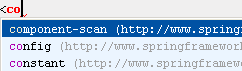

| A special variant of the CodeCompletion feature invoked by &shortcut:ClassNameCompletion; allows you to complete
XML tag names from namespaces not declared in the current file.
If the namespace is not declared yet the declaration is generated automatically.
 |